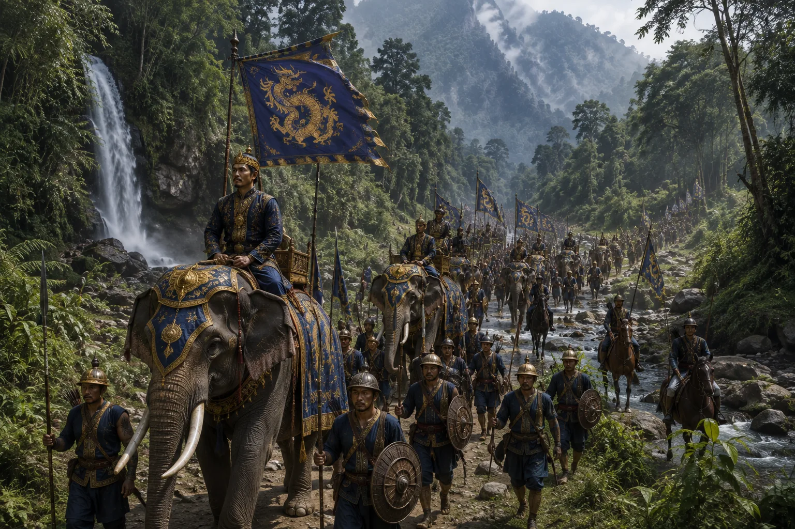

Susenphaa's Punitive Tangshu Campaign
c. 1461 · The coming of Sukaphaa

Susenphaa personally leads an army into the rugged Tangshu hills, encircling rebel villages and cutting off mountain passes.
Sources have not yet been catalogued for this record.
People: Pratap Singha (Susenghphaa), Susenphaa
Open this scene in the interactive archive · Follow this event on MAP